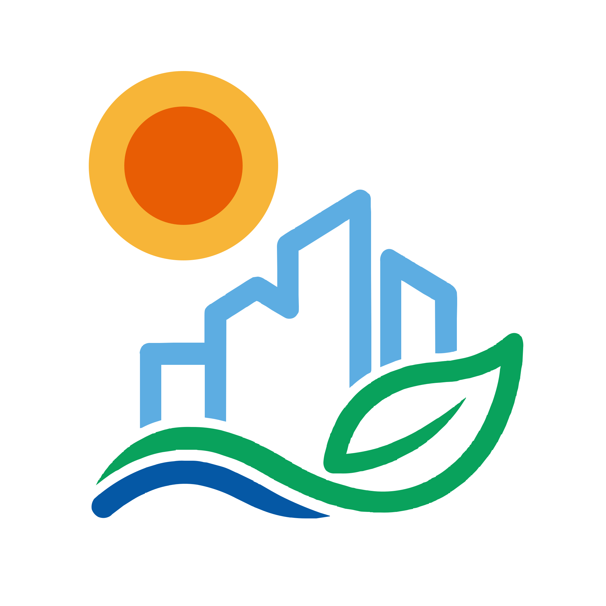

Drawn to mirror the physics
A sun, three buildings, a tree, and a water line — the SUEWS logo is a miniature of what the model simulates, drawn inside a golden-ratio circle.
These assets are free to re-use with a credit to the SUEWS project. Source SVGs live in
site/brand/assets,
and the Brand workshop lets you tweak the composition and
export variants directly from the browser.

LightHorizontal
Stacked
The composition preserves small irregularities that echo how energy and water actually flow through cities — never in perfect lines, always in dynamic equilibrium. The glyph is laid out on a 1:1.618 golden-ratio grid so the sun sits just off-centre on the upper right, and the water line closes the frame at the base.
We used AI tools to draft this branding and are sharing the workflow openly, both for transparency and to help other research teams without a dedicated designer:
- Initial concepts with Gemini 3 Pro Image (Nano Banana Pro). We described SUEWS' core elements — energy balance, hydrological cycle, urban form, natural landscape — and generated early sketches.
- Iterative refinement. Multiple rounds of feedback simplified the design for legibility at favicon size and at poster size.
- Vector conversion with Claude Opus. Raster drafts were traced into clean, scalable SVG, with a single source of truth for the sun, tree, building, and wave geometries.
For interactive tweaking — adjusting colours, trying different compositions, exporting a variant — open the Brand workshop.